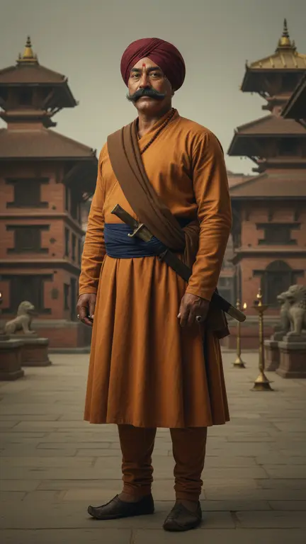

Script in. Film out.
Content Machine
Three tools for telling stories on screen, in Nepali, English or any language. Give it a script, and get pictures and video that look like one film, maps drawn from real data, and subtitles ready for Premiere Pro and DaVinci Resolve.
त्यसैले उहाँलाई कृष्ण भनेर चिनिनेछ।
Pictures and video from a script
It reads the whole story, fixes every face and place, then makes the images and clips. Every four words become a frame.
Free install · your Google accountExploreMaps that are true
Borders, districts and zooms drawn from real open map data, never guessed by AI. Explainer-style map shots for your edit.
Free install · your Google accountExplore
Script to subtitles, in seconds
Paste a script, give the audio or video length, fix anything, and export an .srt for Premiere Pro or DaVinci. Unicode or Preeti.
Free · in your browserOpen editorHow it fits together
One script. Everything your edit needs.
- script.txt
Your script
Nepali, English, anything. Pasted once.
- Outputs/…/frames
Assets
Story frames and approved video clips.
- Outputs/…/maps
Maps
Real-data map shots for places in the story.
- episode.srt
Subtitles
Timed to your voice-over, ready to import.
- Premiere · Resolve
Your edit
Drop everything in, choose your font, publish.